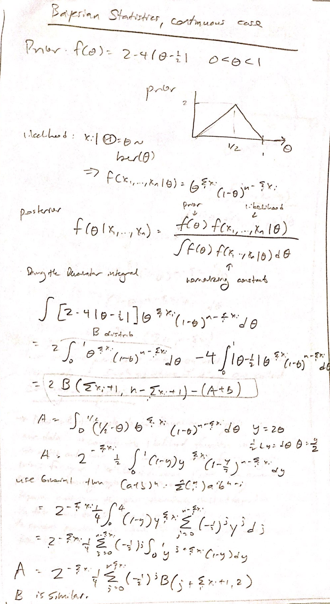

Bayesian statistics takes a prior ("expert input") and a likelihood, and computes a posterior using Baye's Formula
This is often interpreted as posterior = (prior X likelihood) / normalizing_constant. The normalizing constant is usually the biggest challenge, as for continuous distributions integration is required. When there is a conjugate prior, this can be cut short, alternately, we may use some sampling or approximate integration to approximate the normalizing ocnstant.
The posterior is then used in estimator generation (posterior mean, median, mode, etc), prediction, as well as generating posterior variance and "confidence" intervals.
The difference between the Frequentists and the Bayesians is that for frequentists, parameters
Baye's rule for parameter updates is
Ex) Bayesian Updating, Continuous Case
Suppose we had a Bernoulli distribution
and suppose teh original prior for
Some priors work really well with certain likelihoods. The full list can be found on Wikipedia.
Some examples of conjugate prior usage is found in Appendix 2.
One example is
Another example is
Often times, we choose to use conjugate priors, as they really make Bayesian analysis tractable.
To get a statistic from the Bayesian posterior, we sample (or otherwise select) from the posterior.
(Some examples of conjugate prior usage is found in Appendix 2. Example 3 in Appendix shows getting various estimators from teh Beta posterior by applying mean, mode, etc.)

Ex 1)